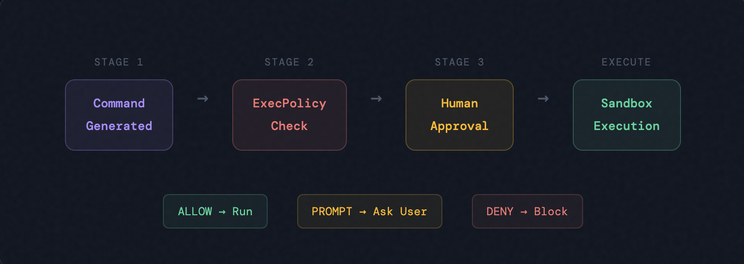
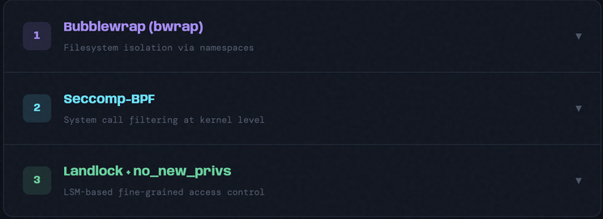

The Vault: How Every Command Runs in a Sandbox
We've traced the journey from protocol to nervous system to the beating heart of the orchestrator. Commands arrive. The engine accepts them. But here's the sacred truth that separates a useful AI agent from a dangerous one:
An AI that can execute arbitrary shell commands must run them in a cage.
This is the Vault, the containment layer that lets Codex run your code without running amok. Three separate operating systems. Three entirely different strategies. One unified philosophy: maximum capability, minimum risk.
Why Sandboxing Matters
Imagine you ask Claude to write a script that downloads your project dependencies. The AI, being helpful, writes a command that pipes curl to bash. Safe enough, right? But what if, through hallucination, prompt injection, or just plain bad luck, the agent decided to add rm -rf / to the pipeline?
Without sandboxing, you'd have a disaster. With sandboxing, you have a contained experiment. The command runs. It can see the workspace. It can download files, read configs, modify code. But it cannot escape. It cannot delete your home directory. It cannot steal SSH keys from ~/.ssh. It cannot phone home to report your source code.
The sandbox is the moat. The chain-of-trust.
But it's not just about preventing catastrophe. Sandboxing also enables transparency. When you see a command execute, you know it ran in a restricted environment. You know what it could access. You know what it couldn't touch. This asymmetry, bounded capability, is what makes AI-assisted development feel safe.
The ExecPolicy DSL: Rules Before Action
Before any command executes, even inside a sandbox, it must pass a policy check. The ExecPolicy language is a simple but powerful DSL for defining command rules:
# Allow all variations of 'ls'
prefix_rule(pattern=["ls"], decision="allowed")
# Block any git push (user must approve)
exact_rule(pattern=["git", "push"], decision="forbidden")
# Prompt the user for npm install (risky!)
exact_rule(pattern=["npm", "install"], decision="prompt")
# Network rules
network_rule(host="api.github.com", port=443, decision="allowed")
network_rule(host="*", port="*", decision="deny")The beauty is in its simplicity. Each rule is a pattern match against the command tokens. The patterns can be:
- prefix: ["echo"] matches echo hello, echo world, etc.
- exact: ["git", "commit"] matches only exactly that sequence
- network: host="*.github.com" with wildcard support
And each rule carries a decision:
- allowed: Execute without asking
- prompt: Ask the user (they can approve or deny)
- forbidden: Hard reject, no execution
The policy evaluator walks through all matching rules and selects the most restrictive decision. If one rule says "prompt" and another says "allowed," the user gets asked.
The Three-Tier Approval Flow

When a command arrives at the sandbox gate, it faces a simple but iron-fisted checkpoint:
1. COMMAND ARRIVES
↓
2. EXECPOLICY CHECK
├─ All rules say "allowed"? → PROCEED (tier 1: auto-approve)
├─ Any rule says "prompt"? → ASK USER (tier 2: interactive)
└─ Any rule says "forbidden"? → REJECT (tier 3: hard deny)
↓
3. SANDBOX EXECUTION
(if approved above)This three-tier system is elegant because it respects three different user postures:
- Permissive: "I trust the AI. Run safe commands without asking."
- Cautious: "Ask me about anything that could be risky."
- Paranoid: "Block dangerous commands outright."
You can mix and match. npm install? Forbidden. npm ls? Allowed. curl to GitHub? Allowed. curl to some IP address? Prompt. The policy becomes a conversation between user intention and system capability.
Linux Sandboxing: The Three-Layer Cake

On Linux, the sandbox is a three-layer stack. Each layer adds different constraints:
Layer 1: Bubblewrap (Filesystem Isolation)
Bubblewrap is a user-space program that creates lightweight namespaces. Think of it as a jailbreak in reverse, it builds walls instead of tearing them down.
When Codex executes a command on Linux with file restrictions, it wraps it like this:
bubblewrap \
--ro-bind / / \ # Mount entire root as read-only
--bind /home/alice/work /home/alice/work \ # Mount workspace as read-write
--tmpfs /tmp \ # Fresh tmpfs for /tmp
--unshare-net \ # Isolate network namespace
--die-with-parent \ # Die if parent dies
-- bash -c 'npm install'The resulting environment is a chroot-like view: the filesystem appears mostly unchanged, but writes only reach specific directories. The process has:
- Read-only system files (/usr, /lib, /etc)
- Read-write workspace directories (/home/alice/work)
- Isolated /tmp that vanishes on exit
- No network access (if policy says so)
Bubblewrap uses kernel namespaces (PID, mount, network, IPC) and bind mounts to achieve this. It's lightweight and fast, no VM, no container overhead. Just kernel isolation primitives, which is why it's the sandbox of choice for high-performance CI/CD.
Layer 2: Seccomp (System Call Filtering)
Even inside the bubblewrap jail, a determined process could try to escalate privileges. That's where seccomp enters the picture.
Seccomp is a kernel feature that lets you filter system calls. A seccomp policy looks like:
Allow: read, write, open, close, mmap, brk, ...
Deny: prctl, ptrace, clone(with CLONE_NEWUSER), ...
Kill: anything elseThe Codex sandbox blocks dangerous syscalls like:
- ptrace: Used to attach to other processes
- prctl(PR_SET_CAPABILITY_BOUNDING_SET): Dropping capabilities (privilege escalation)
- clone with privilege-escalation flags
- Any attempt to create new user namespaces
Seccomp policies are compiled into BPF bytecode and loaded into the kernel. The overhead is negligible, a few nanoseconds per syscall filtered. The security gain is enormous.
Layer 3: Landlock (LSM-Based Access Control) & no_new_privs
Landlock is a Linux Security Module that provides filesystem-level access control without requiring elevated privileges. Unlike seccomp (which blocks syscalls globally), Landlock lets you define per-task filesystem rules:
Allow:
/home/alice/work: read, write, execute
/usr/lib: read, execute
/etc/passwd: read
Deny:
/home/bob: (all)
/root: (all)
~/.ssh: (all)Landlock rules are checked by the kernel for every filesystem access. It's elegant and powerful.
And finally, no_new_privs is a prctl flag that prevents any process from gaining new privileges through setuid binaries or capability escalation. Once set, it's inherited by all children. No escape route.
Together, these three layers form a defense-in-depth strategy:
Layer 1: Bubblewrap → Filesystem view isolation
Layer 2: Seccomp → System call filtering
Layer 3: Landlock → Per-file access control
Layer 4: no_new_privs → Privilege escalation preventionBreaking out requires compromising all four. Good luck.
macOS Sandboxing: Seatbelt
On macOS, the story is different. Apple's Seatbelt (née Sandbox) is a capability-based sandbox that was designed for this exact use case: running untrusted code safely.
Seatbelt profiles are declarative rules written in a Lisp-like syntax:
(allow default)
(deny file-write-data (subpath "/System"))
(deny file-write-data (subpath "/Library"))
(allow file-read* (subpath "/usr/lib"))
(allow file-write* (subpath "/var/tmp"))Codex generates Seatbelt profiles on the fly, granting:
- Read access to system libraries, config files, and the workspace
- Write access to workspace directories only
- No access to sensitive paths like ~/.ssh, ~/.kube, password stores
- Network isolation (when policy says so)
Seatbelt is more user-friendly than Linux's fragmented stack of Bubblewrap+Seccomp+Landlock because Apple built the entire OS with sandbox support. File operations, network access, and process creation all go through Seatbelt enforcement. It's the OS's native security model, not a bolt-on.
Windows Sandboxing: ACLs, Restricted Tokens, and ConPTY
Windows takes yet another path. The Codex Windows sandbox uses three complementary mechanisms:
Mechanism 1: Access Control Lists (ACLs)
Windows ACLs are granular permission sets attached to every file:
C:\Users\alice\work:
✓ alice: full access (read, write, execute, delete)
✓ System: full access
✗ Everyone: deny write
C:\Windows:
✓ System: full access
✗ alice: deny write (explicit deny blocks all)
✓ alice: allow read (but read-only)The Codex sandbox mutates ACLs on system directories to explicitly deny write access. Even if a malicious command tries to write to C:\Windows, the kernel checks the ACL and blocks it.
Mechanism 2: Restricted Tokens
Windows process tokens carry security information: user SID, group memberships, privileges, etc. The sandbox creates a restricted token by:
- Copying the current process token
- Removing dangerous privilege tokens (e.g., SeDebugPrivilege, SeLoadDriverPrivilege)
- Disabling most capability groups
- Lowering the integrity level
The result: a process that runs as the same user but with severely reduced power. It can read and write files it owns, but it cannot:
- Debug other processes
- Load device drivers
- Access the clipboard
- Modify system configuration
- Access other users' files
Mechanism 3: ConPTY (Pseudo-Terminal Emulation)
Finally, ConPTY provides sandboxed interactive terminal access without exposing the real console buffer. The sandboxed process writes to a virtual terminal, which Codex reads and streams back to the user.
All three mechanisms work together:
1. User asks: "run npm install"
2. ExecPolicy approves
3. Codex creates restricted token (drops privs)
4. Codex modifies ACLs on C:\Windows (deny write)
5. Codex spawns process in ConPTY (no direct console)
6. Command runs with sandboxed access
7. Output streams through ConPTY bufferOn Windows, the sandbox is not a separate privilege level (you can't easily unshare namespaces like on Linux). Instead, it's a capability-reduction approach: the process runs as you do, but with fewer rights.
Network Sandboxing: Controlling the Pipes
Across all platforms, Codex also sandboxes network access. A restrictive policy might allow only:
network_rule(host="github.com", port=443, decision="allowed")
network_rule(host="api.github.com", port=443, decision="allowed")
network_rule(host="registry.npmjs.org", port=443, decision="allowed")
network_rule(host="*", port="*", decision="forbidden")This is implemented differently on each platform:
Linux: Uses iptables and network namespace isolation. The sandboxed process lives in a separate network namespace with no default route.
macOS: Uses Seatbelt's network-outbound rules. The OS checks every connect() call.
Windows: Uses Windows Firewall rules and token-based network isolation. ACLs on network resources are checked.
Network sandboxing is crucial because it prevents:
- Exfiltration of source code to attacker servers
- Backdoor communication
- Exploitation of network-based vulnerabilities
The Vault in Action: An Example
Let's trace a real command through the entire vault:
1. User: "Run this: npm install --save lodash"
2. Submission → ExecPolicy Check:
Matches: prefix_rule(pattern=["npm"], decision="prompt")
Decision: PROMPT
3. Codex asks: "npm install detected. Approve? [Y/n]"
User: "Y"
4. ExecPolicy Decision: ALLOWED
5. CommandSpec created with:
program: "npm"
args: ["install", "--save", "lodash"]
cwd: /home/alice/work
sandbox_policy: WorkspaceWrite
network_policy: Restricted(allowed=[npm registry])
6. Platform-specific transform (Linux example):
- Bubblewrap wrap: --ro-bind / /, --bind /home/alice/work
- Seccomp filter: block ptrace, prctl, clone
- Landlock rules: allow /home/alice/work write, deny ~/.ssh read
- no_new_privs: enabled
7. Execution:
bubblewrap \
--ro-bind / / \
--bind /home/alice/work /home/alice/work \
--tmpfs /tmp \
-- /usr/bin/npm install --save lodash
8. Inside sandbox:
- npm spawns child processes (allowed by seccomp)
- npm makes HTTP to npm registry (allowed by network policy)
- npm writes to node_modules/ (allowed by Landlock + bubblewrap)
- npm tries to read ~/.ssh (denied by Landlock)
9. Output streams back to user
Package installed. Workspace updated.
Sandbox exits. All temporary state cleaned up.Each layer performed its duty. The filesystem view was isolated. System calls were filtered. Network access was restricted. And the user knew exactly what permissions the command had.
Beyond Just Security: The Philosophy
Sandboxing isn't just about preventing disasters. It's about enabling trust through transparency. When you see a sandboxed command, you see:
- What files it can read (explicitly granted)
- What files it can write (explicitly granted)
- What network hosts it can reach (explicitly granted)
- What system calls it can invoke (everything except the dangerous ones)
This is the opposite of the old Unix philosophy of "trust by default." Instead, Codex practices zero-trust sandboxing: every access is questioned, every privilege is justified, every boundary is enforced.
It's not paranoia. It's design.
The Vault Holds
The sandbox is the most complex system in Codex precisely because it must be. An AI agent capable of running arbitrary commands is powerful and useful. An AI agent that can run arbitrary commands safely is revolutionary.
Three operating systems. Three different strategies converging on the same goal: maximum security with zero user friction.
On Linux: Bubblewrap for isolation, seccomp for filtering, Landlock for access control.
On macOS: Seatbelt for capability-based enforcement.
On Windows: ACLs for permission, restricted tokens for privilege reduction, and ConPTY for isolation.
Each layer assumes that the ones below it might fail. Each platform builds on its native security primitives. The result is a vault strong enough for an AI to work inside, yet transparent enough that you always know what's happening.
The engine runs. Commands are sandboxed. The user is safe.
But how does the user see what's happening? How are commands presented? How does the agent communicate its actions back to the human?
That's the question for next time.
Next: The Four Frontends, where sandboxed commands meet human eyes.
Originally published on LinkedIn.